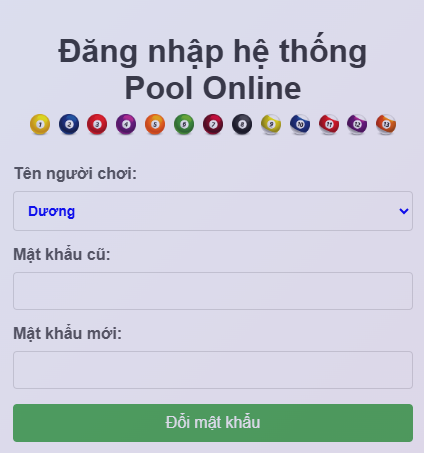
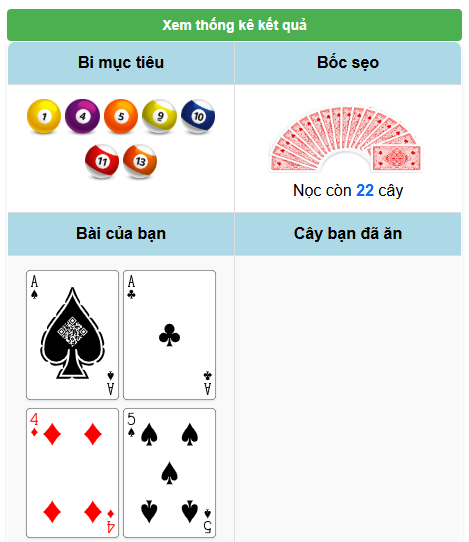
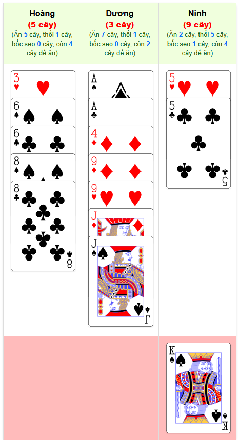

1. Đăng nhập hệ thống
Chọn tài khoản từ danh sách và nhập mật khẩu để đăng nhập.
2. Đổi mật khẩu
Chọn tài khoản từ danh sách và nhập mật khẩu cũ và mật khẩu mới để đổi mật khẩu. Lưu ý: Cần đổi mật khẩu mặc định (123456) ngay nếu không người khác có mật khẩu sẽ vào xem được bài của mình

3. Thao tác cơ bản
Sau khi đăng nhập xong sẽ chuyển sang màn hình chính:
Tại màn hình chính có các chức năng như sau:
- Click vào nút Xem thống kê kết quả để xem thông tin tổng hợp kết quả trận đấu hiện tại.

- Số to màu trắng là tổng số cây của người chơi tính đến hiện tại.
- Ở dưới là thứ chơi của ván, phần mềm tự sắp xếp theo kết quả các ván đấu trước đó.
- Tiếp theo là bảng tổng hợp kết quả theo từng ván đấu theo từng người chơi. Với các số liệu về tổng số cây đến thời điểm hiện tại của từng người chơi. Số ván móm, ù, sẹo, số cây chênh với người đang dẫn đầu.
- Click lần nữa vào nút Xem thống kê kết quả để thu gọn phần thông tin thống kê.

- Ô Bi mục tiêu hiển thị danh sách những con bi mà người chơi cần ăn (theo bài của người chơi)
- Ô Bài của bạn (bên trái) hiển thị danh sách những lá bài của người chơi. Phần mềm tự chia bài mới sau khi kết thúc ván.
- Khi ăn Bi xong, click đúp vào lá bài để hạ bài. Lá bài sẽ được chuyển sang ô Cây bạn đã ăn ở ô bên phải. Máy sẽ đọc tên lá bài được hạ.
- Nếu hạ nhầm cây thì click đúp vào lá bài ở ô Cây bạn đã ăn thì lá bài sẽ được bốc lên và chuyển về ô Bài của bạn
- Khi bị sẹo thì click đúp vào Nọc ở ô Bốc sẹo. Phần mềm sẽ tự bốc cho 1 cây bài phù hợp còn trên nọc và đưa vào ô Bài của bạn. Máy sẽ đọc tên lá bài bốc được. Sau mỗi lượt người chơi hạ bài máy sẽ tự tính toán số cây bài ở trong nọc còn có thể bốc. Nếu nọc không còn lá nào mà người chơi sẹo thì xử thua ván đó.

- Sau mỗi lượt hạ bài của người chơi. Các lá bài nào của các người chơi còn lại bị Thối thì sẽ bị mờ đi và không thể hạ lá bài này được nữa.

- Ở cuối màn hình thể hiện thông tin Số cây của từng người chơi ở ván đang chơi, ù hay móm, số cây chi tiết (phần mềm tự động tính sau mỗi lượt hạ bài của người chơi).

- Dòng tiếp theo Hiển thị các lá bài mà từng người chơi đã ăn.
- Dòng cuối cùng (nền đỏ) hiển thị lá các lá bài mà người chơi bị sẹo đã bốc được.